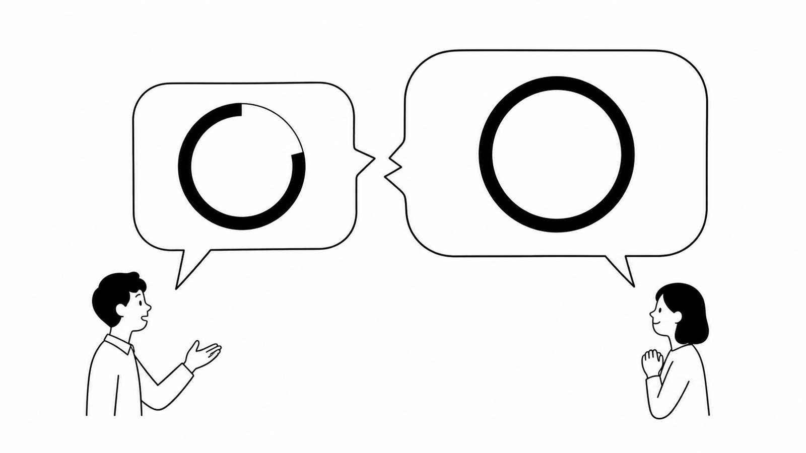

行動経済学 × SNSビジネスの視点で、売れる「考え方の型」を綴ります。

「絶対やった方がいい」の絶対って、何％ですか？発信者の80％の自信と、受け手の100％の期待。このズレがSNSマーケティングのトラブルを生みます。プロスペクト理論の確率加重から、期待値の伝え方を行動経済アナリストが解説します。

「差別化しましょう」と言われて、みんなと同じ型や流行を追っていませんか。就活面接・体育館・ゴールドラッシュの例から、差別化は奇抜さではなく「どこで戦うか」を決めるポジショニングだと解説します。

「高額商品が売れて初めて0→1」は本当か。300円でも0→1は成立する。大事なのは金額ではなく「何が売れたか」。初売上と事業の0→1の違い、1になってからが本番である理由を解説します。

「2＋2＝4cm²」は答えは合っても、問題が変われば解けない。SNSで「毎日投稿」「LINE7通」「9,800円」という答えだけを持ち帰る人が止まる理由を、行動経済アナリストが「答えと応え」の違いから解説します。

「失敗談を見せると親近感が湧く」——でも、それが逆効果になる相手もいます。見込客と既存顧客では"聞きたいこと"が違う。参照点依存性と期待不一致から、発信・商品・売った後の関係が噛み合うブランドの作り方を整理します。

自分の名前をAI検索したら、SNSより先にUdemy・Amazon・ポッドキャストが出てきました。同じ情報でも「どこに、どんな形で残っているか」で扱われ方が変わる。AI時代に選ばれるための「AEO」と、一つの内容を複数の場所で働かせる考え方を整理します。

『オフラインで活動します』——その前向きな方向転換、正体は転職活動かもしれません。お客様の声の無断掲載、販売目的を隠したプレゼント導線。特商法だけでなく、2026年改正の個人情報保護法も両側から迫ります。攻略すべきは抜け道ではなく、お客さんが安心して情報を預けられる仕組みです。

「もっと主体的に動いてください」と言いながら「全部確認してください」。SNSスクールのチーム化で起きる、自由と統制のハイブリッド地獄。制度を増やすほど現場が混乱する構造を解説します。

コラム100本目。「なぜ先のことが分かるんですか？」とよく聞かれますが、予知能力ではありません。原理原則から逆算しているだけ。最新テクニックを追う前に、舞台が変わっても使える「考え方の土台」を——強いポケモンより、強いトレーナーを育てる話です。

SNSの売り上げは「母数 × 率」の2変数。フォロワーを増やす戦略と、率を上げる戦略。どちらを選ぶかで発信内容は全然変わります。専門知識がつくと本質を発信したくなりますが、そこには「知識の呪い」という落とし穴が——行動経済学から発信戦略を設計する話です。

「専門家ポジション」と「先輩ポジション」——同じ発信でも、人がお金を払う理由はまったく違います。情報の非対称性 vs 共感の対称性という視点で、商品と発信を噛み合わせるポジション設計を、行動経済アナリストが解説します。

「コンセプトを絞れ」は正しい。でも、その言葉だけを真に受けると、真面目な人ほど“地下室”まで降りて詰みます。チャンクという考え方で、5年後も発信と商品を増やし続けられるコンセプト設計のしかたを解説します。